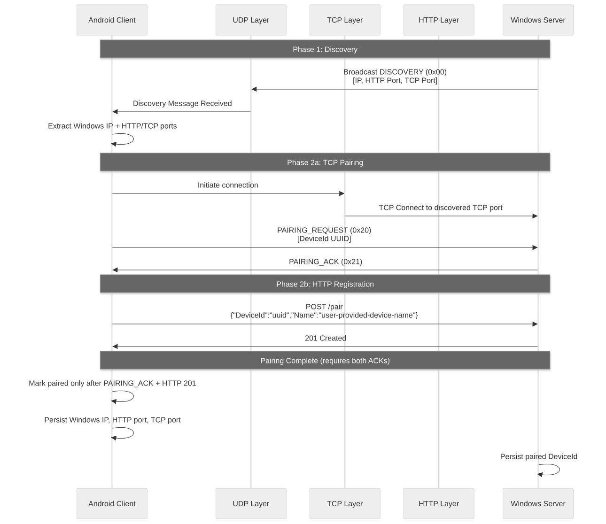
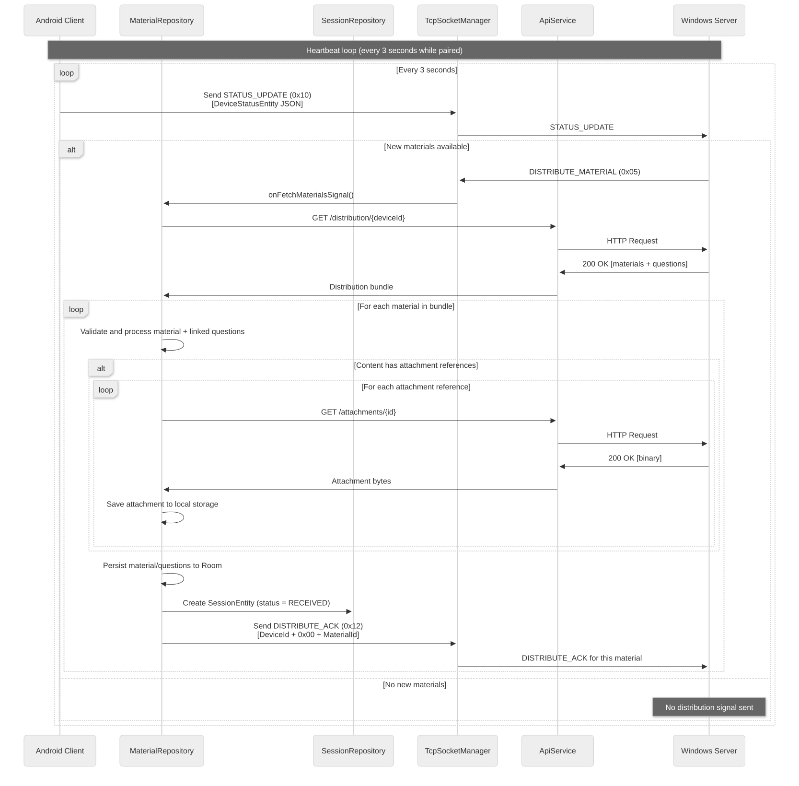
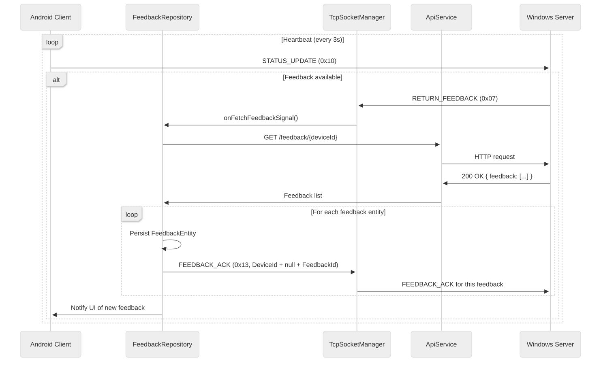
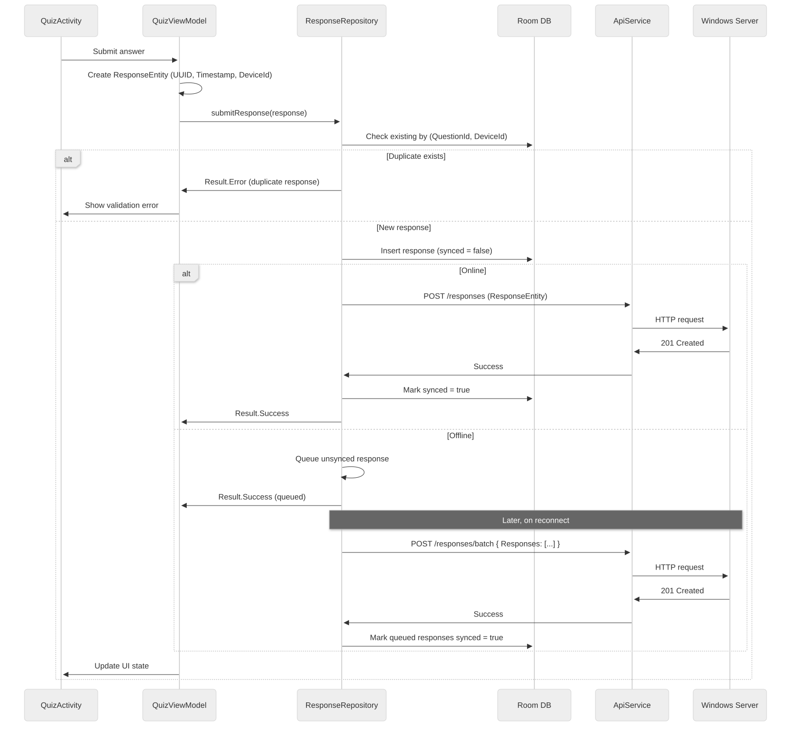
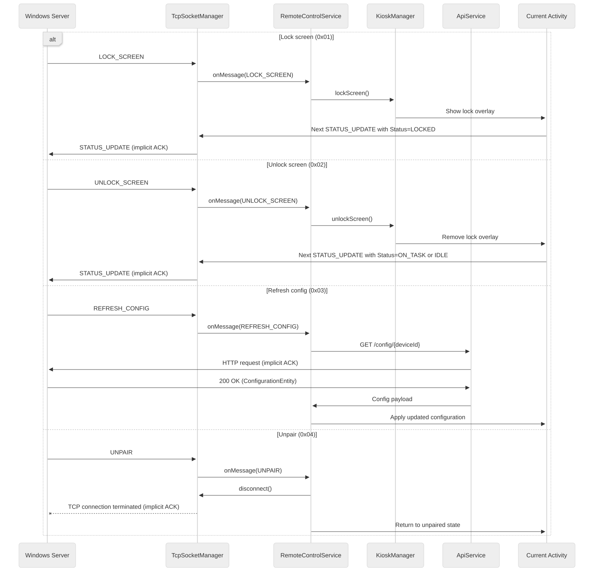
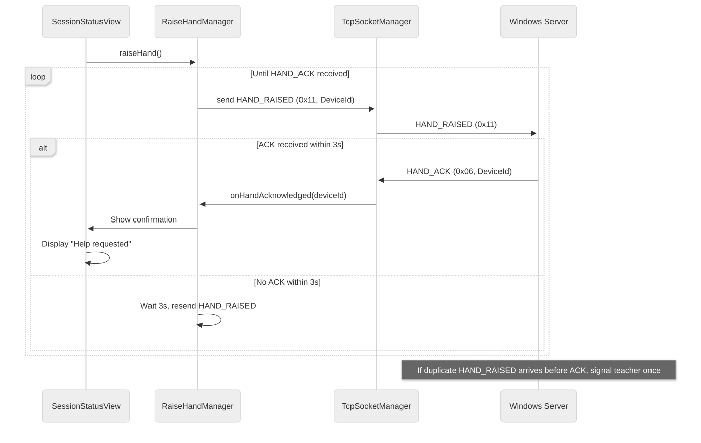

System Architecture
Technical architecture and system design for our platform.
High-level system overview
At its core, Manuscripta is a distributed client-server system consisting of two interdependent applications. The Windows application, which displays a teacher portal, runs on the teacher’s laptop and acts as a central server. Meanwhile, the Android application, which guides student learning, runs on each student’s e-ink display and acts as a client. Under this system, multiple clients may connect to the same server at a time. This bidirectional communication occurs exclusively over a local area network with no cloud dependency. This architecture, which facilitates a clean separation of concerns, centralises the storage and management of data, including those associated with lesson materials and tablet configurations, into the teacher’s laptop, thus ensuring data integrity and consistency.

In addition to this bidirectional communication, the platform supports unidirectional communication from the Windows laptop to both reMarkable or Kindle clients, on which our custom Android application cannot be installed and run. In these cases, the teacher may transmit the PDF version of a chosen lesson material to any number of specified clients. The PDF transmission to reMarkable and Kindle clients is carried out via the reMarkable cloud and via email respectively. As this is a one-way transmission, no responses of any kind may be returned to the teacher’s laptop.

Windows application
The Windows teacher portal is a whole-stack web application consisting of a frontend and a backend. At runtime, the frontend is responsible for starting and supervising the backend process.
The Windows application uses a layered architecture with clear separation of concerns across backend, frontend, and testing components. The backend is an ASP.NET Core service that owns business rules, persistence, and device networking; the frontend is an Electron + React client that acts as the teacher-facing interface; and bidirectional runtime communication is handled primarily through SignalR.
Data persistence
For the purposes of our application, data storage is classified into two categories: long-term persistence and short-term persistence.
Long-term persisted data are stored in a database in the user’s application settings folder. Specifically, the backend deterministically assumes a default database location on startup, creating the directory if it does not already exist. Long-term persistence allows data to be retrievable via SQLite and Entity Framework Core (EF Core) across application restarts. Examples of long-term persisted data include unit collections, units, lessons, materials, questions, source document metadata, attachment metadata, configuration defaults, PDF export defaults, external device metadata and email credential records.
On the contrary, short-term persisted data is intentionally volatile. As they are only valid for the current application run, these data are stored in an in-memory database. Examples of short-term persisted data include student responses, sessions, feedback lifecycle data, paired device registry, live device status cache and per-device configuration overrides.
On startup, the backend proactively performs orphan cleanup for attachment files and external-device configuration files, reconciling filesystem state with database state. Likewise, the frontend is responsible for removing orphaned attachments and questions when the material editor is used or when broken attachment links are discovered. This ensures strong consistency across relational data and sidecar file storage.
Backend layers
To ensure a separation of concerns with maintainability and testability, the Windows backend is organised into four main layers: the model layer, the data layer, the service layer and the controller layer.
The model layer facilitates the communication between other layers by defining the core application data structures. This includes entities, enumeration types, data transfer objects (DTOs), events, mapping types and network message models. The class diagrams below, for instance, illustrate the relationships between selected entities in the model layer.
The data layer manages the application’s connection to the database via a database context. It defines how model entities are stored, indexed and manipulated, enforcing the long-term and short-term persistence rules.
The backend business logic is implemented in the service layer, where long-term persisted data from EF Core is bridged with short-term persisted data from memory. This layer coordinates creation, retrieval, update, delete (CRUD) and other operations on model entities, with corresponding domain restraints and lifecycle rules to validate cascading and orphan-related behaviour. Moreover, this layer provides runtime integration survices including PDF generation, file handling, external-device deployment, email dispatch, AI generation or embedding workflows, dependency availability checks and background initialisation tasks. The service layer also includes a TeacherPortalHub for communicating with the Electron frontend, as elucidated in the next section.
The controller layer exposes the service layer’s functionalities through external-facing REST API endpoints, from which HTTP requests are translated into service calls before returning safe responses.



Interaction with the Android application
Interaction with the Android application employs separate channels for different communication purposes.
Before any meaningful communication can occur, student tablets must first locate the teacher’s Windows machine on the local network through UDP broadcasting. The teacher application continuously announces its presence on the network, broadcasting its IP address and the ports on which it is listening. When a tablet receives these broadcasts, it extracts the connection details and pairs with the laptop. Using UDP allows the broadcasted information to reach all devices on the network simultaneously with no prior connection and minimal overhead. The pairing process is shown in the sequence diagram below.

After initial pairing is established, the primary communication channel transitions to a mixture of HTTP and TCP.
When a new piece of information is made available to students, it is impractical for the Windows laptop to directly transmit it to student tablets via TCP, as this protocol is optimised for control signals rather than bulk data transfer. Using HTTP requests for this is similarly unfeasible as it requires client initiation. To resolve this problem, we have utilised a hybrid three-phase push-pull pattern which uses both HTTP and TCP. In this pattern, the Windows laptop uses TCP to signal that something is available. When the tablets receive this signal, they use HTTP to pull that content. Lastly, a tablet must send an acknowledgment signal via TCP to indicate successful retrieval. This design pattern is repeatedly utilised in material deployment, feedback delivery and configuration refresh mechanisms.


In addition to the design pattern above, HTTP is also used to register student names and submit student responses. Meanwhile, TCP is used for real-time remote-control signals like locking tablet screens, updating tablet statuses and sending raise-hand messages. These are illustrated in the sequence diagrams below.



Interaction with reMarkable and Kindle clients
Manuscripta’s Windows architecture treats reMarkable and Kindle endpoints as external and asynchronous clients rather than classroom-native ones. This is because while Android tablets participate in direct classroom control and live status loops, external devices are integrated through cloud-mediated dispatch channels that do not support screen locking, instant acknowledgements or direct TCP control semantics. Hence, our system does not try to force a real-time classroom protocol onto devices that are designed for delayed sync and store-and-forward workflows.
For reMarkable, communication is built around the runtime dependency rmapi, with a token-based pairing flow. A one-time code is collected, the backend validates rmapi availability, and rmapi authentication writes a device-specific configuration file under the application data directory. Thereafter, each reMarkable device is effectively represented by a persisted entity plus its corresponding rmapi config artifact, which supports independent authentication domains per device.
Communication with Kindle tablets is email-centric and relies on SMTP credential availability. Pairing captures the Kindle destination address semantics, while deployment uses Amazon’s Send to Kindle service to send PDFs as email attachments. Email credentials are stored in a single-record repository and encrypted at rest, with DPAPI on Windows and a development fallback for non-Windows environments.
Overall, the material delivery process is architected as a two-phase pipeline where a PDF version of the material is generated before being dispatched. Generation of PDF takes into account the configuration settings associated with the device, the material as well as the global defaults.